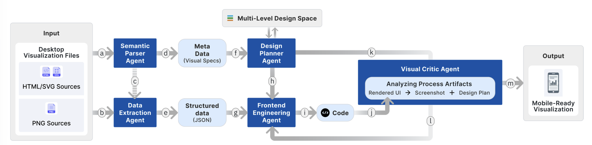

Abstract
With the rise of mobile-first consumption, users increasingly engage with data visualizations on mobile devices. However, the vast majority of existing visualizations are originally authored for desktop environments. Due to significant differences in viewport size and interaction paradigms, directly scaling desktop charts often results in illegible text, information loss, and interaction failures. To bridge this gap, we propose an automated framework to adapt desktop-based visualizations for mobile screens. By systematically categorizing the operations involved in the adaptation process, we establish a multi-level design space. This space defines evolution rules spanning from the global topology level, through the reference frame level, down to the visual elements level. Guided by this theoretical framework, we developed Proteus, a large language model–driven multi-agent system that automatically parses online visualizations, predicts optimal transformation strategies within the design space, and generates equivalent, highly readable visualizations for mobile devices. Case studies and an in-depth user study with 12 participants demonstrate the effectiveness and usability of Proteus.
System Pipeline

BibTeX
@inproceedings{liu2026proteus,
title={Proteus: Shapeshifting Desktop Visualizations for Mobile via Multi-level Intelligent Adaptation},
author={Liu, Can and Cheng, Sizhe and Liang, Feng and Jiang, Zhibang and Huang, Lingru and Athapaththu, Kavinda and Wang, Yong},
booktitle={Proceedings of the 2026 ACM Designing Interactive Systems Conference (DIS '26)},
year={2026}
}